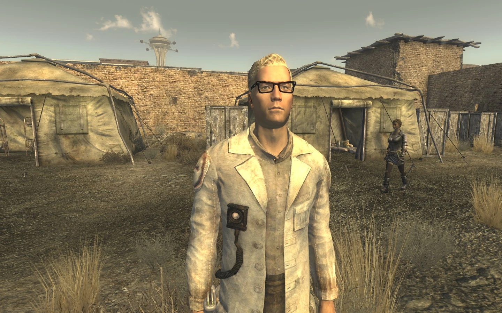
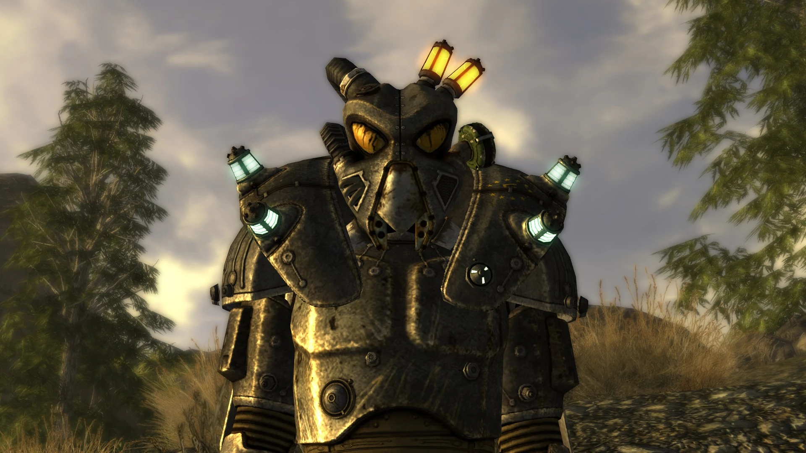
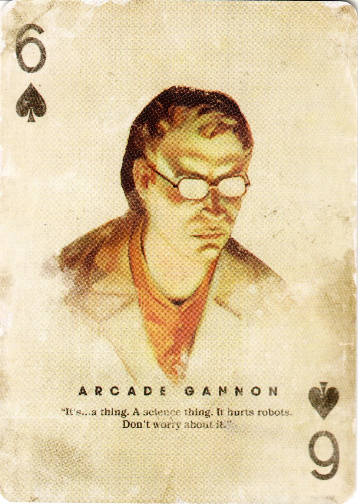
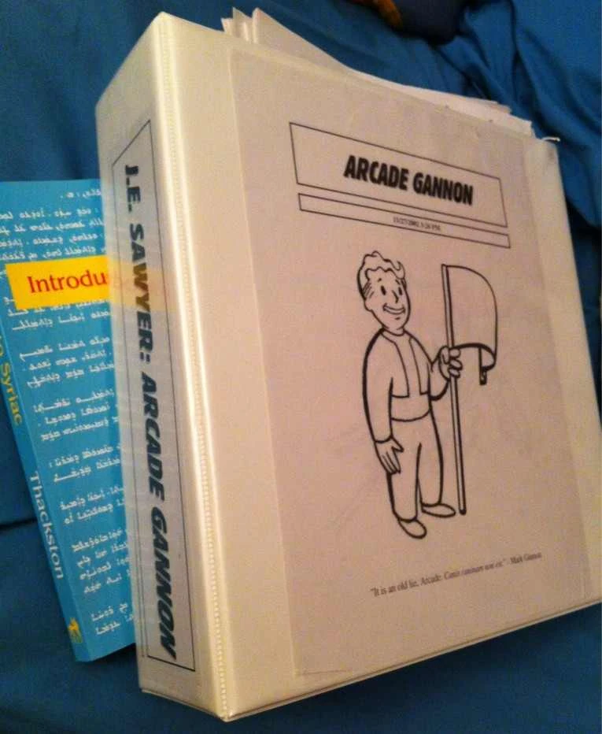

Arcade Gannon
アーケード・ゲノン
アーケード・イスラエル・ゲノンは、モハビ・ウェイストランドに居住する黙示録の追随者の医師であり科学者です。
彼は運び屋の同行者（コンパニオン）となる可能性のある人物の一人です。
「人々を助けることには熱心ですが、nihil novi sub sole.（太陽の下に新しきものなし）」
「私は本当に退屈な人間ですよ。フリーサイドのジャンキーからの方が、もっと良い話が聞けるでしょう」
経歴
エンクレイヴでの生活
エンクレイヴの将校であるゲノン・シニアとその妻の間に生まれた唯一の息子であるアーケードは、選ばれし者がオイルリグを爆破した数年後の2240年代半ば、ナヴァロ軍事基地で生まれました。
幼い頃に父親を亡くし、母親と強い絆を築きましたが、本人の言葉を借りれば、彼は父の死を完全に乗り越えることはありませんでした。
父親が爆弾が世界を破壊する前も後も人道に対する罪を犯したファシストの準軍事組織のメンバーであったという事実は、彼に大きな影響を与えました。
また、ゲノン・シニアの死は彼が任務で外出している間に起こり、その正確な状況は残党たちによってアーケードに明かされることはありませんでした。
その後、アーケードと母親、そして父親の旧部隊の数人の兵士はナヴァロ基地を放棄せざるを得なくなり、基地を壊滅させたNCRの攻撃を辛うじて逃れました。
ナヴァロを脱出した後も、ブラザーフッド・オブ・スティールによる追跡の危険にさらされ続けたため、一行は南へ移動し、過去のつながりが発見されないようNCRへの統合を試みました。
ある時点で、アーケードは黙示録の追随者と接触し、最終的に彼らに加わりました。
人々を助けたいという願いと、学ぶことへの才能を組み合わせた結果でした。
追随者での時間は、アーケードが医学の中に自らの使命を見出す助けとなりました。
彼はNCRの中核地にある優れた医療施設でグループからあらゆる知識を学び、自ら診療所を経営できるほどの有能な医師となりました。
彼はまた歴史、特に戦前の失敗した社会経済政策というトピックに興味を持ち、追随者の広範なライブラリや剣闘士に関する古いホロテープを利用してラテン語を話すことさえ学びました。
彼は完全な資格を持つ植物学者ではありませんが、植物とその医療的特性の研究に時間を費やしています。
モハビへの移動
NCRの指導部は、敗北したエンクレイヴの残党が新しいアイデンティティを採用し、国境内で秘密裏に生活していることに気づきました。
これにより、グループの戦争犯罪を裁くためにこれらの人々を狩り出す方針がとられ、通常は無期懲役が課されました。
NCRレンジャー、ブラザーフッド・オブ・スティールのメンバー、そして多数の賞金稼ぎがエンクレイヴとのつながりを持つ者を積極的に探し求めていたため、残党は追っ手から逃れるためにNCR領土の辺境へと移動し続けなければなりませんでした。
彼らが安全であることを確認するために後を追いたいと考えたアーケードは、最も貢献できる辺境での任務を選んだとして、上司に異動を願い出ました。
残党を追ってNCRから遠く離れたモハビ・ウェイストランドまで来たアーケードは、ニューベガス周辺に定住し、フリーサイドのオールド・モーモン・フォートにあるジュリー・ファーカスの支部に入りました。
彼はジュリーの依頼で植物研究に焦点を当て、一般的な病気や怪我の代替治療法や、地元の植物から医療品を製造する方法（例：サボテンからスティムパックを作るなど）を考え出そうとしています。
彼はこの研究を高潔だと考えていますが、実際に画期的な発見をする確率は低いとして、時間の無駄であることも認めています。
せいぜい、これらの植物を使う古い忘れられた方法を再発見することを望んでおり、それは略奪されていない戦前の病院の数が減少した際、追随者が独自の物資を生産する助けとなるでしょう。
彼は研究を退屈だと感じていますが、ジュリーによって人目に触れないようにされていることを感謝しており、自分を「社交的な人間ではない」と主張しています。
しかし、アーケードは一般的に人々を助けること、特にフリーサイドの虐げられた絶望的な人々を助けることには熱心なままです。
この他者を助けたいという衝動は、追随者がフリーサイドで手を広げすぎていることを認識しつつも、最善を尽くして人々を助けるという決意を意味しています。
簡単に言えば、もし追随者がやらなければ、他に誰がやるのか？ということです。
性格
アーケードは自分を退屈で、やや非社交的だと主張していますが、彼との長い交流は、彼が実際には博学で機知に富み、会話の中で冗談を愛する人物であることを証明しています。
社会学と歴史に関する深い知識により、彼は哲学的な事柄を容易に議論し、知的な議論を好みます。
シーザーのような同等の知性を持つ人物は、アーケードとその機知を強く好む傾向があります。
逆に、レガート・ラニウスのような冗談や辛辣な機知を嫌う人物は、彼に飽き飽きするでしょう。
この知性はまた、彼を確固たる信念を持つ男にしました。
彼は個人の自由、独立、そして自己決定を強く信じており、もし隷属を強いられるならば、いかなる手段を使っても拘束から逃れるために自殺することをいといません。
世界レベルでは、彼はモハビが外国勢力や国内の独裁者から独立することを固く支持しています。
彼はNCRとリージョンをモハビから追い出し、Mr.ハウスの独裁支配を打倒することがモハビの住民の鎖を断ち切り、彼らが自らの道を切り開くことを可能にすると信じています。
その場合、独立が彼の理想主義的な希望を和らげたとしても、彼はエンクレイヴの知識と技術を使用して秩序を維持し、地元のコミュニティが自らを統治するのを助ける準備ができています。
彼はNCRによるモハビの併合を、追随者の信念とは全く相容れない帝国主義的なプロジェクトであると考えていますが、NCRを完全に拒絶しているわけではありません。
彼はNCRをシーザー・リージョンの恐怖に対する防波堤であると考えており、併合はリージョンによる征服よりも好ましい結果です。
アーケードが問題視している唯一の結果は独裁者です。
第一にMr.ハウスとその権力行使であり、それは追随者との絆の解消と幻滅をもたらします。
第二にリージョンです。
アーケードはリージョンを完全に拒絶し、妄想的な暴君が夢見た時代錯誤な神話であると考えており、シーザーについて議論することは彼が罵倒語を使用する数少ない時の一つです。
アーケードは特に、シーザーの誇大妄想的な傾向と、過去の過ちから学ぶことを拒否し、代わりにそれらを再現し繰り返そうとすることを嫌悪しています。
人間関係
自身の過去に関する葛藤のため、アーケードは意図的に個人的な質問をはぐらかし、時にはそれがファシストとの過去のつながりを隠蔽するためであると大胆に主張することもあります。
この主題に関する感情を処理することの難しさは、彼を他人に打ち明けることに対して慎重にさせます。
アーケードは自身の同性愛についてためらいはなく、人生の中で数人の良い男性に出会ったと述べていますが、彼らは相談相手としては不適格で、関係は長続きしなかったと主張しています。
アーケードが維持している唯一の長続きする関係は、彼が家族のように思っているエンクレイヴの残党たちとの関係です。
彼の最も親密な絆は、母親の死後「人生で唯一の女性」となったデイジー・ホイットマンとのものです。
彼はいつもデイジーと親しく、彼女には子供がいなかったため、いつも話を聞いてくれました。
残党の指揮官であるジュダ・クレガーは、アーケードの父親への忠誠心から、礼儀正しく親切で、アーケードを歓迎しようと最善を尽くしました。
アーケードは彼を特に温かい人としては覚えていませんが、インスピレーションを与えるリーダーとして、反対意見を持つジョンソンとモレノを一つのユニットにまとめ上げることができる人物として記憶しています。
部隊の2人の重装歩兵も彼に足跡を残しました。
アーケードはオリオン・モレノのエンクレイヴへの熱烈な献身を覚えており、ナヴァロを去った瞬間、モレノの中の全ての愛がエンクレイヴの崩壊と共に燃え尽きたのを目撃しました。
一方、カニバル・ジョンソンは、軍法会議にかけられることなくエンクレイヴに逆らい、覆す能力で彼に感銘を与え、知らず知らずのうちにアーケードの父親の遺産に関する内部葛藤を育みました。
ジョンソンはいつもゲノン・シニアについて良いことを言い、その息子が多くの面で父親を反映していると観察していました。
残党たちからの多くの再確認にもかかわらず、アーケードは自分が本当に父親に似ているのかを知りたいと願っており、彼と共に成長できなかったことを嘆いています。
彼は自分の人生に何かが欠けていると感じ、父親の遺産と折り合いをつけるのに苦労しています。
しかし、運び屋との交流を通じて、アーケードは父親の靴を履く必要はないが、自分なりの方法で他人の人生にポジティブな影響を与えることができることに気づき、内部の危機を乗り越えることができる可能性があります。
同行者（コンパニオン）としての能力
アーケードは以下の条件のいずれかが満たされている場合に同行者として仲間に加わります：
- 黙示録の追随者との評判が「好意的」以上であること。
- ジュリー・ファーカスのために「High Times」を完了し、余剰の物資を追随者に提供すること。
- Speechスキルチェック（75以上）に合格すること。
- Confirmed Bachelor（確認済みの独身男性）のパークを持っていること。
- 知能（Intelligence）が3以下である場合、アーケードは同情心から付いてきてくれます。
同行者パーク：Better Healing（より良い治療）
アーケードが同行している間、あらゆる回復アイテムの回復量が20%増加します。
ギャラリー



開発の裏話

アーケードはプロジェクトディレクターのジョシュ・ソーヤーによって執筆されました。
ソーヤーは他の多くの同行者の基本詳細を概説しましたが、アーケードは彼が直接全ての対話を執筆した唯一の同行者でした。
彼は元々、ブラック・アイル・スタジオによるキャンセルされたFallout 3（Van Buren）に登場する予定でした。
アーケードは、ジョシュ・ソーヤーがクリス・アヴェロン主宰のFalloutテーブルトークキャンペーンで使用していたプレイヤーキャラクターの一人でした。
ソーヤーはこのテーブルトークゲームの間に作成されたアーケードのキャラクターのオリジナルデザインのノートを保持しています。
2020年10月のライブ配信中、ソーヤーはこのノートの一部を公開しました。
アーケードのプロフィールでは、彼は34歳、体重は約145ポンドとされています。
ミドルネームは元々「ダニエル」で、父親の名前はマークでした。
アーケードの声を担当したのは、TVシリーズ『CHUCK/チャック』や映画『シャザム!』で知られる俳優のザッカリー・リーヴァイです。
ジョシュ・ソーヤーは、リーヴァイが各対話のトーンを即座に直感する能力に非常に感銘を受け、収録セッションは非常に早く進み、各行1、2回のテイクで済んだとコメントしています。
アーケード・ゲノン。彼は単なる同行者ではなく、Falloutシリーズが持つ「過去との決別と継承」というテーマを象徴する、最も知的なキャラクターの一人だ。
エンクレイヴの残党という、ウェイストランドでは死罪に等しい過去を背負いながら、彼は黙示録の追随者として人道支援に身を投じている。その葛藤は深く、父親の形見であるテスラアーマーを再び身にまとう決断をする際、彼は単に過去に戻るのではなく、過去を「清算」するために立ち上がる。
彼がラテン語で引用する言葉や、シーザーとの舌戦、そして理想主義者ゆえの苦悩。どれをとっても非常に人間臭く、魅力に溢れている。ザッカリー・リーヴァイの演技も相まって、彼の皮肉屋だが心優しい性格が見事に表現されている。
「太陽の下に新しきものなし」。彼が好んで使うこの言葉は、歴史が繰り返されることへの諦念ではなく、歴史を知る者としての責任感の裏返しなのかもしれない。
This article was created by translating and editing Arcade Gannon from Nukapedia: The Fallout Wiki.
Licensed under the Creative Commons Attribution-Share Alike License (CC BY-SA 3.0).
コミュニティ維持のため、寄付を受け付けております。
> COMMENTS